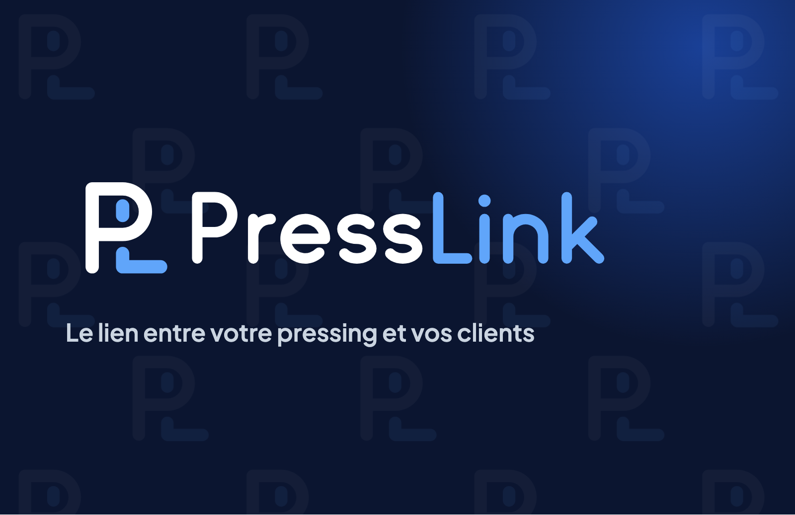
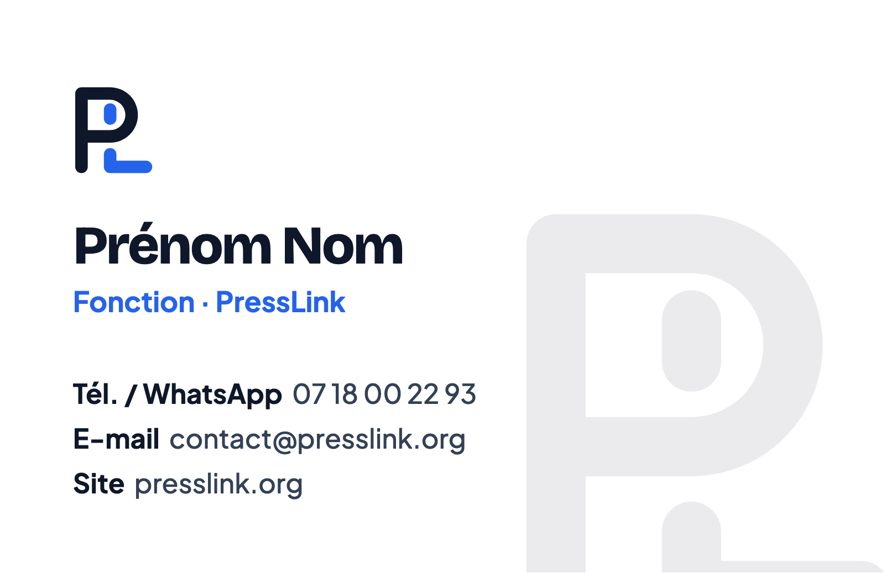
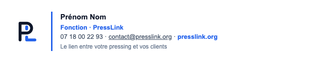

08 · Les applications


| Élément | Spécification |
|---|---|
| Recto | Fond encre, motif à 3 %, halo, logo horizontal négatif (13 mm de haut), descripteur. |
| Verso | Fond blanc, symbole couleur, nom en Bricolage Grotesque 800, fonction en bleu, coordonnées en Plus Jakarta Sans. |
| Papier | Couché mat 350 g, pelliculage mat recto verso conseillé. |
| Impression | Quadrichromie, fond perdu de 3 mm, textes à 4 mm du bord au minimum. |

Le modèle HTML crea/signature-email.html se colle dans Gmail ou Outlook. Il utilise Arial (lisible partout) et le logo hébergé sur presslink.org. Pas de bannière ni de citation sous la signature.